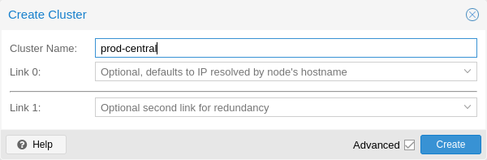
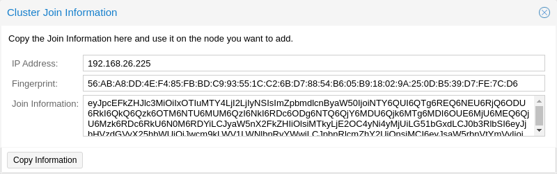
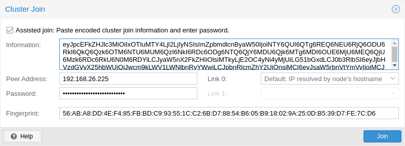

5. Cluster#
Proxmox VE 클러스터 관리자
노드를 클러스터로 그룹화하면 다음과 같은 이점이 있습니다:
중앙 집중식 웹 기반 관리
멀티 마스터 클러스터: 각 노드가 모든 관리 작업을 수행할 수 있습니다.
데이터베이스 기반 파일 시스템인
pmxcfs 를 사용하여 구성 파일을 저장하고,corosync 를 사용하여 모든 노드에 실시간으로 복제합니다.물리 호스트 간에 가상 머신과 컨테이너의 손쉬운 마이그레이션
빠른 배포
방화벽 및 HA와 같은 클러스터 전체 서비스
5.1. 요구사항#
corosync가 작동하려면 모든 노드가 5405-5412번 UDP 포트를 통해 서로 연결할 수 있어야 합니다.
날짜와 시간이 동기화되어야 합니다.
노드 간 22번 TCP 포트의 SSH 터널이 필요합니다.
고가용성에 관심이 있는 경우 안정적인 쿼럼을 위해 최소 3개의 노드가 있어야 합니다. 모든 노드의 버전이 동일해야 합니다.
특히 공유 스토리지를 사용하는 경우에는 클러스터 트래픽을 위한 전용 NIC를 사용하는 것이 좋습니다.
노드를 추가하려면 클러스터 노드의 root 비밀번호가 필요합니다.
가상 머신의 온라인 마이그레이션은 노드에 동일한 공급업체의 CPU가 있는 경우에만 지원됩니다. 그렇지 않은 경우에도 작동할 수 있지만 보장되지는 않습니다.
Proxmox VE 6.X의 더 이전 버전으로 클러스터를 수행할 수 없습니다. Proxmox VE 6.x와 이전 버전 간의 클러스터 프로토콜(corosync)이 근본적으로 변경되었습니다.
5.2. 노드 준비#
먼저 모든 노드에 Proxmox VE를 설치합니다. 각 노드가 최종 호스트 이름 및 IP 구성으로 설치되었는지 확인하세요. 클러스터 생성 후에는 호스트 이름과 IP를 변경할 수 없습니다.
일반적으로 모든 노드 이름과 해당 IP를 /etc/hosts에서 참조하거나 다른 방법으로 이름을 확인할 수 있도록 하는 것이 일반적이지만, 클러스터가 작동하는 데 반드시 필요한 것은 아닙니다. 하지만 기억하기 쉬운 노드 이름을 사용하여 SSH를 통해 한 노드에서 다른 노드로 연결할 수 있으므로 유용할 수 있습니다(링크 주소 유형도 참조하세요). 클러스터 구성에서는 항상 노드를 IP 주소로 참조하는 것이 좋습니다.
5.3. 클러스터 생성#
콘솔에서 클러스터를 만들거나(Datacenter → cluster)를 사용하여 API를 통해 클러스터를 만들 수 있습니다.
5.3.1. 웹 GUI를 통한 생성#

Datacenter → Cluster에서
Proxmox VE 6.2부터 클러스터에 최대 8개의 폴백 링크를 추가할 수 있습니다. 이중화 링크를 추가하려면 Add 버튼을 클릭하고 각 필드에서 링크 번호와 IP 주소를 선택합니다. Proxmox VE 6.2 이전 버전에서는 두 번째 링크를 폴백으로 추가하려면
5.3.2. 명령줄을 통한 생성#
hp1# pvecm create CLUSTERNAME
새 클러스터 사용 상태를 확인합니다:
hp1# pvecm status
5.3.3. 동일한 네트워크의 여러 클러스터#
동일한 물리 또는 논리 네트워크에 여러 개의 클러스터를 만들 수 있습니다. 이 경우 클러스터 통신 스택에서 발생할 수 있는 충돌을 피하기 위해 각 클러스터는 고유한 이름을 가져야 합니다. 이렇게 하면 클러스터를 명확하게 구분할 수 있어 사람이 혼동하는 것을 방지할 수 있습니다.
corosync cluster의 대역폭 요구량은 상대적으로 낮지만, 패키지의 지연 시간과 초당 패키지 전송률(PPS)이 제한 요소입니다. 동일한 네트워크에 있는 여러 클러스터가 이러한 리소스를 놓고 서로 경쟁할 수 있으므로 대규모 클러스터의 경우 별도의 물리적 네트워크 인프라를 사용하는 것이 합리적일 수 있습니다.
5.4. 클러스터에 노드 추가#
클러스터에 노드를 추가할 때 /etc/pve의 모든 기존 구성을 덮어씁니다. 특히, 추가되는 노드는 게스트 ID가 충돌할 수 있으므로 GuestOS를 보유할 수 없으며, 노드는 클러스터의 스토리지 구성을 상속받게 됩니다. 기존 게스트가 있는 노드에 참여하려면 해결 방법으로 각 게스트의 백업을 만든 다음(
5.4.1. GUI를 통해 클러스터에 노드 추가#

기존 클러스터 노드에서 웹 인터페이스에 로그인합니다. Datacenter → Cluster에서 상단의 Join Information 버튼을 클릭합니다. 그런 다음 Copy Information 버튼을 클릭하거나

그런 다음 추가하려는 노드의 웹 인터페이스에 로그인합니다. Datacenter → Cluster에서 Join Cluster 버튼을 클릭합니다.
Assisted Join 란을 비활성화하면 됩니다.
이제 노드가
5.4.2. 명령줄을 통해 클러스터에 노드 추가#
# pvecm add IP-ADDRESS-CLUSTER
클러스터 상태를 확인하려면 다음을 사용합니다:
# pvecm status
4개 노드 추가 후 클러스터 상태
# pvecm status
Cluster information
~~~~~~~~~~~~~~~~~~~
Name: prod-central
Config Version: 3
Transport: knet
Secure auth: on
Quorum information
~~~~~~~~~~~~~~~~~~
Date: Tue Sep 14 11:06:47 2021
Quorum provider: corosync_votequorum
Nodes: 4
Node ID: 0x00000001
Ring ID: 1.1a8
Quorate: Yes
Votequorum information
~~~~~~~~~~~~~~~~~~~~~~
Expected votes: 4
Highest expected: 4
Total votes: 4
Quorum: 3
Flags: Quorate
Membership information
~~~~~~~~~~~~~~~~~~~~~~
Nodeid Votes Name
0x00000001 1 192.168.15.91
0x00000002 1 192.168.15.92 (local)
0x00000003 1 192.168.15.93
0x00000004 1 192.168.15.94
클러스터 노드 리스트
# pvecm nodes
Membership information
~~~~~~~~~~~~~~~~~~~~~~
Nodeid Votes Name
1 1 hp1
2 1 hp2 (local)
3 1 hp3
4 1 hp4
5.4.3. 분리된 클러스터 네트워크로 노드 추가하기#
분리된 클러스터 네트워크가 있는 클러스터에 노드를 추가할 때는
# pvecm add IP-ADDRESS-CLUSTER --link0 LOCAL-IP-ADDRESS-LINK0
Kronosnet 전송 계층의 기본 제공 중복성을 사용하려면
GUI를 사용하면
5.5. 클러스터에서 노드 제거#
노드에서 모든 가상 머신을 이동합니다. 보관하려는 로컬 데이터 또는 백업의 사본을 모두 만들었는지 확인하세요. 또한 제거할 노드에 대해 예약된 복제 작업을 모두 제거해야 합니다.
다음 예에서는 클러스터에서 노드 hp4를 제거합니다.
hp4가 아닌
hp1# pvecm nodes
Membership information
~~~~~~~~~~~~~~~~~~~~~~
Nodeid Votes Name
1 1 hp1 (local)
2 1 hp2
3 1 hp3
4 1 hp4
이 시점에서 hp4의 전원을 끄고 현재 구성으로 (네트워크에서) 다시 전원이 켜지지 않는지 확인해야 합니다.
다시 전원이 켜지지 않는지 확인하는 것이 중요합니다. 노드의 전원을 그대로 켜면 클러스터가 중단될 수 있으며, 정상 작동 상태로 복원하기 어려울 수 있습니다.
노드 hp4의 전원을 끄면 클러스터에서 안전하게 제거할 수 있습니다.
hp1# pvecm delnode hp4
Killing node 4
error = CS_ERR_NOT_EXIST ). 이는 실제 노드 제거에 실패했다는 뜻이 아니라 오프라인 노드를 죽이려는 코로싱크에 실패했다는 뜻입니다. 따라서 안전하게 무시해도 됩니다.
노드 목록을 다시 확인하려면
hp1# pvecm status
...
Votequorum information
~~~~~~~~~~~~~~~~~~~~~~
Expected votes: 3
Highest expected: 3
Total votes: 3
Quorum: 2
Flags: Quorate
Membership information
~~~~~~~~~~~~~~~~~~~~~~
Nodeid Votes Name
0x00000001 1 192.168.15.90 (local)
0x00000002 1 192.168.15.91
0x00000003 1 192.168.15.92
어떤 이유로든 이 서버를 동일한 클러스터에 다시 참여시키려면 다음과 같이 해야 합니다:
해당 서버에 Proxmox VE를 새로 설치합니다,
그런 다음 이전 섹션에서 설명한 대로 추가해야 합니다.
제거된 노드의 구성 파일은 여전히
5.6. 쿼럼(Quorum)#
Proxmox VE는 쿼럼 기반 기술을 사용하여 모든 클러스터 노드 간에 일관된 상태를 제공합니다.
쿼럼은 분산 시스템에서 작업을 수행하기 위해 분산 트랜잭션이 획득해야 하는 최소 투표 수입니다.
네트워크 파티셔닝의 경우 상태를 변경하려면 과반수의 노드가 온라인 상태여야 합니다. 클러스터가 쿼럼을 잃으면 클러스터는 읽기 전용 모드로 전환됩니다.
5.7. 클러스터 네트워크#
클러스터 네트워크는 클러스터의 핵심입니다. 이 네트워크를 통해 전송되는 모든 메시지는 각각의 순서대로 모든 노드에 안정적으로 전달되어야 합니다. Proxmox VE에서 이 부분은 고성능, 낮은 오버헤드, 고가용성 개발 툴킷을 구현한 corosync에 의해 수행됩니다. 이는 당사의 분산형 구성 파일 시스템(
5.7.1. 네트워크 요구 사항#
Proxmox VE 클러스터 스택은 안정적인 네트워크를 필요로 합니다. 모든 노드 간의 지연 시간이 5밀리초 이하(LAN 성능)여야 안정적으로 작동합니다. 노드 수가 적은 설정에서는 더 높은 지연 시간을 갖는 네트워크가 작동할 수 있지만, 이는 보장되지 않으며 세 개 이상의 노드 및 약 10밀리초 이상의 지연 시간에서는 매우 불가능해집니다.
네트워크는 다른 구성원들에 의해 많이 사용되어서는 안 되며, 코로싱크는 대역폭을 많이 사용하지는 않지만 지연 시간 변동에 민감합니다. 이상적으로 corosync는 자체적으로 물리적으로 분리된 네트워크에서 실행되어야 합니다. 특히 corosync와 스토리지에 대해 공유 네트워크를 사용하지 마십시오(중복 구성에서 잠재적으로 우선 순위가 낮은 대비용으로 사용할 수는 있음).
클러스터를 설정하기 전에 네트워크가 해당 목적에 적합한지 확인하는 것이 좋습니다. 노드가 클러스터 네트워크에서 서로 연결할 수 있는지 확인하려면
udp 또는udpu 로 설정하여 멀티캐스트 또는 레거시 유니캐스트를 활성화할 수 있지만, 이렇게 하면 모든 암호화 및 중복 지원이 비활성화됩니다. 따라서 이는 권장되지 않습니다. 5.7.2 별도의 클러스터 네트워크 매개변수 없이 클러스터를 생성할 때, corosync 클러스터 네트워크는 일반적으로 웹 인터페이스 및 VM의 네트워크와 공유됩니다. 설정에 따라 스토리지 트래픽도 동일한 네트워크를 통해 전송될 수 있습니다. corosync는 시간에 민감한 실시간 응용 프로그램이므로 이를 변경하는 것이 좋습니다. 새 네트워크 설정 먼저 새 네트워크 인터페이스를 설정해야 합니다. 이는 물리적으로 분리된 네트워크에 있어야 합니다. 네트워크가 클러스터 네트워크 요구 사항을 충족하는지 확인하십시오.
5.7.2. 클러스터 네트워크 분리#
매개변수 없이 클러스터를 생성하는 경우, 일반적으로 corosync 클러스터 네트워크는 웹 인터페이스 및 가상 머신의 네트워크와 공유됩니다. 설정에 따라 스토리지 트래픽도 동일한 네트워크를 통해 전송될 수 있습니다. corosync는 시간이 중요한 실시간 애플리케이션이므로 이를 변경하는 것이 좋습니다.
새 네트워크 설정
먼저 새 네트워크 인터페이스를 설정해야 합니다. 이 인터페이스는 물리적으로 분리된 네트워크에 있어야 합니다. 네트워크가 클러스터 네트워크 요구 사항을 충족하는지 확인하세요.
클러스터 생성 시 분리
이는 새 클러스터를 만들 때 사용하는
10.10.10.1/25에 고정 주소가 있는 추가 NIC를 설정하고 이 인터페이스를 통해 모든 클러스터 통신을 송수신하려는 경우 다음과 같이 실행합니다:
pvecm create test --link0 10.10.10.1
모든 것이 제대로 작동하는지 확인하려면 다음을 실행합니다:
systemctl status corosync
그런 다음 위와 같이 진행하여 클러스터 네트워크가 분리된 노드를 추가합니다.
클러스터 생성 후 분리
이미 클러스터를 생성한 상태에서 전체 클러스터를 재구축하지 않고 통신을 다른 네트워크로 전환하려는 경우 이 작업을 수행할 수 있습니다. 이 변경으로 인해 클러스터에서 짧은 기간 동안 쿼럼이 손실될 수 있는데, 노드가 corosync를 다시 시작하고 새 네트워크에 차례로 올라와야 하기 때문입니다.
먼저 corosync.conf 파일을 수정하는 방법을 확인하세요. 그런 다음 파일을 열면 다음과 유사한 파일이 표시됩니다:
logging {
debug: off
to_syslog: yes
}
nodelist {
node {
name: due
nodeid: 2
quorum_votes: 1
ring0_addr: due
}
node {
name: tre
nodeid: 3
quorum_votes: 1
ring0_addr: tre
}
node {
name: uno
nodeid: 1
quorum_votes: 1
ring0_addr: uno
}
}
quorum {
provider: corosync_votequorum
}
totem {
cluster_name: testcluster
config_version: 3
ip_version: ipv4-6
secauth: on
version: 2
interface {
linknumber: 0
}
}
ringX_addr 은 실제로 corosync링크 주소 를 지정합니다. “ring”이라는 이름은 이전 버전과의 호환성을 위해 유지되는 이전 corosync 버전의 잔재입니다.
가장 먼저 해야 할 일은 노드 항목에
그런 다음 모든 노드의
이 예에서는 클러스터 통신을 10.10.10.0/25 네트워크로 전환하고자 하므로 각 노드의
동일한 절차를 사용하여 다른
ringX_addr 값도 변경할 수 있습니다. 그러나 한 번에 하나의 링크 주소만 변경하는 것이 문제 발생 시 복구가 더 쉽기 때문에 권장합니다.
logging {
debug: off
to_syslog: yes
}
nodelist {
node {
name: due
nodeid: 2
quorum_votes: 1
ring0_addr: 10.10.10.2
}
node {
name: tre
nodeid: 3
quorum_votes: 1
ring0_addr: 10.10.10.3
}
node {
name: uno
nodeid: 1
quorum_votes: 1
ring0_addr: 10.10.10.1
}
}
quorum {
provider: corosync_votequorum
}
totem {
cluster_name: testcluster
config_version: 4
ip_version: ipv4-6
secauth: on
version: 2
interface {
linknumber: 0
}
}
그런 다음 변경된 모든 정보가 올바른지 최종 확인한 후 저장하고 다시 한 번 corosync.conf 파일 편집 섹션에 따라 변경 사항을 적용합니다.
변경 사항은 실시간으로 적용되므로 corosync를 반드시 다시 시작할 필요는 없습니다. 다른 설정도 변경했거나 corosync가 불만을 표시하는 경우 선택적으로 재시작을 트리거할 수 있습니다.
단일 노드에서 실행합니다:
systemctl restart corosync
이제 모든 것이 정상인지 확인합니다:
systemctl status corosync
corosync가 다시 작동하기 시작하면 다른 모든 노드에서도 다시 시작하세요. 그러면 새 네트워크에서 하나씩 클러스터 멤버십에 참여하게 됩니다.
5.7.3. Corosync 주소#
corosync 링크 주소(이전 버전과의 호환성을 위해
IPv4/v6 주소 를 직접 사용할 수 있습니다. 정적이고 일반적으로 부주의하게 변경되지 않으므로 이 방법을 권장합니다.호스트 이름 은getaddrinfo 를 사용하여 확인되므로 기본적으로 사용 가능한 경우 IPv6 주소가 먼저 사용됩니다(man gai.conf 도 참조하세요). 특히 기존 클러스터를 IPv6로 업그레이드할 때는 이 점을 염두에 두세요.
호스트명은 corosync나 corosync가 실행되는 노드를 건드리지 않고도 확인 주소가 변경될 수 있으므로 corosync에 미치는 영향을 고려하지 않고 주소를 변경하는 상황이 발생할 수 있으므로 주의해서 사용해야 합니다.
호스트명을 선호하는 경우 corosync 전용의 정적 호스트명을 별도로 사용하는 것이 좋습니다. 또한 클러스터의 모든 노드가 모든 호스트 이름을 올바르게 확인할 수 있는지 확인하세요.
Proxmox VE 5.1부터 지원되는 동안 호스트명은 진입 시점에 확인됩니다. 확인된 IP만 구성에 저장됩니다.
이전 버전에서 클러스터에 참여한 노드는 여전히
5.8. Corosync 이중화#
corosync는 기본적으로 통합된 크로노스넷 계층을 통해 중복 네트워킹을 지원합니다(레거시 udp/udpu 전송에서는 지원되지 않음). 클러스터를 생성하거나 새 노드를 추가하는 동안 GUI에서
유용한 장애 조치를 제공하려면 모든 링크가 자체 물리적 네트워크 연결에 있어야 합니다.
링크는 우선순위 설정에 따라 사용됩니다. 이 우선 순위는
# pvecm create CLUSTERNAME --link0 10.10.10.1,priority=15 --link1 10.20.20.1,priority=20
우선순위를 수동으로 구성하지 않은 경우(또는 두 링크의 우선순위가 동일한 경우), 링크는 번호 순서대로 사용되며 낮은 번호가 더 높은 우선순위를 갖습니다.
모든 링크가 작동하더라도 우선순위가 가장 높은 링크에만 코로싱크 트래픽이 표시됩니다. 링크 우선순위는 혼합할 수 없으므로 우선순위가 다른 링크는 서로 통신할 수 없습니다.
우선순위가 낮은 링크는 우선순위가 높은 모든 링크가 실패하지 않는 한 트래픽을 볼 수 없으므로 다른 작업(VM, 스토리지 등)에 사용되는 네트워크를 우선순위가 낮은 링크로 지정하는 것이 유용한 전략이 될 수 있습니다. 최악의 경우 지연 시간이 길거나 혼잡한 연결이 전혀 연결되지 않는 것보다 나을 수도 있습니다.
5.8.1. 기존 클러스터에 이중화 링크 추가하기#
실행 중인 구성에 새 링크를 추가하려면 먼저 corosync.conf 파일을 편집하는 방법을 확인하세요.
그런 다음
마지막으로
번호가 1번인 링크를 추가했다고 가정하면 새 구성 파일은 다음과 같이 보일 수 있습니다:
logging {
debug: off
to_syslog: yes
}
nodelist {
node {
name: due
nodeid: 2
quorum_votes: 1
ring0_addr: 10.10.10.2
ring1_addr: 10.20.20.2
}
node {
name: tre
nodeid: 3
quorum_votes: 1
ring0_addr: 10.10.10.3
ring1_addr: 10.20.20.3
}
node {
name: uno
nodeid: 1
quorum_votes: 1
ring0_addr: 10.10.10.1
ring1_addr: 10.20.20.1
}
}
quorum {
provider: corosync_votequorum
}
totem {
cluster_name: testcluster
config_version: 4
ip_version: ipv4-6
secauth: on
version: 2
interface {
linknumber: 0
}
interface {
linknumber: 1
}
}
5.9. Proxmox VE 클러스터에서 SSH의 역할#
Proxmox VE는 다양한 기능에 SSH 터널을 활용합니다.
콘솔/셸 세션 프록시(노드 및 게스트)
노드 A에 연결되어 있는 상태에서 노드 B의 셸을 사용하는 경우, 노드 A의 터미널 프록시에 연결되며, 이 터미널 프록시는 비대화형 SSH 터널을 통해 노드 B의 로그인 셸에 연결됩니다.
보안 모드 에서 VM 및 CT 메모리와 로컬 스토리지 마이그레이션.마이그레이션하는 동안 마이그레이션 정보를 교환하고 메모리 및 디스크 콘텐츠를 전송하기 위해 소스 노드와 대상 노드 간에 하나 이상의 SSH 터널이 설정됩니다.
스토리지 복제
5.9.1. SSH 설정#
Proxmox VE 시스템에서는 SSH 구성/설정이 다음과 같이 변경됩니다:
root 사용자의 SSH 클라이언트 구성이ChaCha20 보다AES 를 선호하도록 설정됩니다.root 사용자의authorized_keys /etc/pve/priv/authorized_keys에 연결되어 클러스터 내의 모든 인증된 키를 병합합니다. 파일이비밀번호를 사용하여 root로 로그인할 수 있도록
sshd 를 구성합니다.
구형 시스템에는 모든 노드 호스트 키의 병합된 버전이 포함된
/etc/pve/priv/known_hosts를 가리키는 심볼릭 링크로/etc/ssh/ssh_known_hosts가 설정되어 있을 수도 있습니다. 이 시스템은 pve-cluster <<인서트 버전>>에서 명시적 호스트 키 고정으로 대체되었으며, 심볼릭 링크가 여전히 있는 경우pvecm updatecerts --unmerge-known-hosts를 실행하여 구성을 해제할 수 있습니다.
5.9.2. .bashrc 및 형제 의 자동 실행으로 인한 함정#
구성된 셸에서 로그인 시 실행되는 사용자 지정
이런 복잡한 문제를 피하기 위해서는 /root/.bashrc 에 체크를 추가하여 세션이 대화형으로 실행되도록 한 후에
.bashrc 파일 의 시작 부분에 이 스니펫을 추가할 수 있습니다 .
# Early exit if not running interactively to avoid side-effects!
case $- in
*i*) ;;
*) return;;
esac
5.10. Corosync 외부 투표 지원#
이 섹션에서는 Proxmox VE 클러스터에 외부 투표자를 배포하는 방법을 설명합니다. 구성된 경우 클러스터는 클러스터 통신의 안전 속성을 위반하지 않고 더 많은 노드 장애를 견딜 수 있습니다.
이 작업을 수행하려면 두 가지 서비스가 필요합니다.
각 Proxmox VE 노드에서 실행되는 QDevice 데몬
독립 서버에서 실행되는 외부 투표 데몬
그 결과, 더 작은 설정(예: 2+1 노드)에서도 더 높은 가용성을 달성할 수 있습니다.
5.10.1 QDevice 기술 개요#
Corosync Quorum Device(QDevice)는 각 클러스터 노드에서 실행되는 데몬입니다. 외부에서 실행되는 타사 중재자의 결정에 따라 클러스터의 쿼럼 하위 시스템에 구성된 수의 투표를 제공합니다. 주요 용도는 클러스터가 표준 쿼럼 규칙에서 허용하는 것보다 더 많은 노드 장애를 견뎌낼 수 있도록 하는 것입니다. 외부 장치가 모든 노드를 보고 투표할 노드 집합을 하나만 선택할 수 있으므로 안전하게 수행할 수 있습니다. 이는 해당 노드 집합이 타사 투표를 받은 후(다시) 쿼럼을 가질 수 있는 경우에만 수행됩니다.
현재 타사 중재자로
외부 호스트에 대한 유일한 요구 사항은 클러스터에 대한 네트워크 액세스가 필요하고 corosync-qnetd 패키지를 사용할 수 있어야 한다는 것입니다. 우리는 Debian 기반 호스트를 위한 패키지를 제공하며, 다른 Linux 배포판도 해당 패키지 관리자를 통해 패키지를 사용할 수 있어야 합니다.
5.10.2. 지원되는 설정#
우리는 짝수 노드가 있는 클러스터에 대해 QDevices를 지원하고, 더 높은 가용성을 제공해야 하는 경우 2노드 클러스터에 QDevices를 권장합니다. 홀수 노드가 있는 클러스터의 경우 현재 QDevices 사용을 권장하지 않습니다. 그 이유는 QDevice가 각 클러스터 유형에 대해 제공하는 투표 수의 차이 때문입니다. 짝수 클러스터는 단일 추가 투표를 받으며, 이는 가용성만 증가시킵니다. QDevice 자체가 실패하면 QDevice가 전혀 없는 것과 같은 위치에 있기 때문입니다.
반면, 홀수 클러스터 크기의 경우 QDevice는
QNet 데몬 자체가 실패하면 다른 노드가 실패하거나 클러스터가 즉시 쿼럼을 잃을 수 있습니다. 예를 들어, 15개 노드가 있는 클러스터에서 클러스터가 쿼럼에 도달하기 전에 7개가 실패할 수 있습니다. 그러나 여기에 QDevice가 구성되어 있고 그 자체가 실패하면 15개 노드 중
어느 노드도 실패할 수 없습니다. 이 경우 QDevice는 거의 단일 실패 지점 역할을 합니다.한 노드와 QDevice를 제외한 모든 노드가 실패할 수 있다는 사실은 처음에는 유망하게 들리지만, 이는 HA 서비스의 대량 복구로 이어질 수 있으며, 이는 남은 단일 노드에 과부하를 일으킬 수 있습니다. 더욱이 Ceph 서버는
((N-1)/2) 개 이하 의 노드만 온라인 상태로 유지되면 서비스 제공을 중단합니다.
단점과 영향을 이해하면 이 기술을 홀수 클러스터 설정에 사용할지 여부를 스스로 결정할 수 있습니다.
5.10.3. QDevice-Net 설정#
권한이 없는 사용자로 corosync-qdevice에 투표를 제공하는 모든 데몬을 실행하는 것이 좋습니다. Proxmox VE와 Debian은 이미 그렇게 하도록 구성된 패키지를 제공합니다. 데몬과 클러스터 간의 트래픽은 Proxmox VE에서 QDevice의 안전하고 보안적인 통합을 보장하기 위해 암호화되어야 합니다.
먼저 외부 서버에
external# apt install corosync-qnetd
그리고 모든 클러스터 노드에
pve# apt install corosync-qdevice
이 작업을 수행한 후 클러스터의 모든 노드가 온라인 상태인지 확인하세요.
이제 Proxmox VE 노드 중 하나에서 다음 명령을 실행하여 QDevice를 설정할 수 있습니다.
pve# pvecm qdevice setup <QDEVICE-IP>
클러스터의 SSH 키는 자동으로 QDevice에 복사됩니다.
호스트 키 검증 실패 와 같은 오류가 표시되면pvecm updatecerts 를 실행하면 문제가 해결될 수 있습니다.
모든 단계가 성공적으로 완료되면 “완료”가 표시됩니다. 다음을 사용하여 QDevice가 설정되었는지 확인할 수 있습니다.
pve# pvecm status
...
Votequorum information
~~~~~~~~~~~~~~~~~~~~~
Expected votes: 3
Highest expected: 3
Total votes: 3
Quorum: 2
Flags: Quorate Qdevice
Membership information
~~~~~~~~~~~~~~~~~~~~~~
Nodeid Votes Qdevice Name
0x00000001 1 A,V,NMW 192.168.22.180 (local)
0x00000002 1 A,V,NMW 192.168.22.181
0x00000000 1 Qdevice
QDevice 상태 플래그
위에서 볼 수 있듯이 QDevice의 상태 출력은 일반적으로 세 개의 열을 포함합니다.
A / NA Alive 또는 Not Alive.
외부
corosync-qnetd 데몬과의 통신이 작동하는지 여부를 나타냅니다.
V / NV QDevice가 노드에 투표를 할 경우.
노드 간의 corosync 연결이 끊어졌지만 둘 다 외부
corosync-qnetd 데몬과 여전히 통신할 수 있는 분할 브레인 상황에서는 한 노드만 투표를 받습니다.
MW / NMW 마스터가 승리( MV )하거나 승리하지 못합니다( NMW ).
기본값은 NMW 입니다.
NR QDevice가 등록되지 않았습니다.
5403 (qnetd 서버의 기본 포트)에 TCP/IP를 통해 접근할 수 있는지 확인하세요.
5.11. Corosync 구성#
/etc/pve/corosync.conf 파일 은 Proxmox VE 클러스터에서 중심적인 역할을 합니다. 이 파일은 클러스터 멤버십과 네트워크를 제어합니다. 이에 대한 자세한 내용은 corosync.conf 매뉴얼 페이지를 확인하세요.
man corosync .conf
노드 멤버십의 경우 항상 Proxmox VE에서 제공하는
5.11.1. corosync.conf 편집#
corosync.conf 파일을 편집하는 것은 항상 간단하지 않습니다. 각 클러스터 노드에 두 개가 있는데, 하나는 /etc/pve/corosync.conf 에 있고 다른 하나는 /etc/corosync/corosync.conf 에 있습니다. 클러스터 파일 시스템에서 하나를 편집하면 변경 사항이 로컬에 전파되지만 그 반대는 아닙니다.
구성은 파일이 변경되는 즉시 자동으로 업데이트됩니다. 즉, 실행 중인 corosync에 통합할 수 있는 변경 사항은 즉시 적용됩니다. 따라서 편집하는 동안 파일을 저장할 때 의도치 않은 변경 사항이 트리거되는 것을 방지하기 위해 항상 복사본을 만들어 편집해야 합니다.
cp /etc/pve/corosync.conf /etc/pve/corosync.conf.new
그런 다음, 모든 Proxmox VE 노드에 미리 설치된 nano 또는 vim.tiny 와 같은 원하는 편집기를 사용하여 구성 파일을 엽니다 .
메모 구성이 변경된 후에는 항상 config_version 번호를 높이세요. 이를 생략하면 문제가 발생할 수 있습니다. 필요한 변경을 한 후 현재 작업 구성 파일의 다른 사본을 만듭니다. 이는 새 구성이 적용되지 않거나 다른 문제를 일으킬 경우 백업으로 사용됩니다.
cp /etc/pve/corosync.conf /etc/pve/corosync.conf.bak
그런 다음 이전 구성 파일을 새 파일로 바꿉니다.
mv /etc/pve/corosync.conf.new /etc/pve/corosync.conf
다음 명령을 사용하여 변경 사항이 자동으로 적용될 수 있는지 확인할 수 있습니다.
systemctl status corosync
journalctl -b -u corosync
변경 사항을 자동으로 적용할 수 없는 경우 다음을 통해 corosync 서비스를 다시 시작해야 할 수 있습니다.
systemctl restart corosync
오류가 발생하면 아래의 문제 해결 섹션을 확인하세요.
5.11.2. 문제 해결#
문제:
[...]
corosync[1647]: [QUORUM] 쿼럼 공급자: corosync_votequorum을 초기화하지 못했습니다.
corosync[1647]: [SERV ] 서비스 엔진 'corosync_quorum'이 다음 이유로 인해 로드되지 않았습니다.
'구성 오류: nodelist 또는 quorum.expected_votes를 구성해야 합니다!'
[...]
이는 구성에서 corosync
견적을 내지 않을 때 구성 쓰기
쿼럼이 없는 노드에서 /etc/pve/corosync.conf를 변경해야 하는 경우 무엇을 해야 하는지 알고 있다면 다음을 사용하세요.
pvecm expected 1
이렇게 하면 예상 투표 수가 1로 설정되고 클러스터가 쿼레이트됩니다. 그런 다음 구성을 수정하거나 마지막으로 작동한 백업으로 되돌릴 수 있습니다.
corosync가 더 이상 시작할 수 없다면 이것만으로는 충분하지 않습니다. 그런 경우 /etc/corosync/corosync.conf 에서 corosync 구성의 로컬 복사본을 편집하여 corosync가 다시 시작될 수 있도록 하는 것이 가장 좋습니다. 모든 노드에서 이 구성이 동일한 내용을 가지고 있는지 확인하여 스플릿 브레인 상황을 피하십시오.
5.11.3. Corosync 구성 용어집#
ringX_addr
이는 노드 간 Kronosnet 연결을 위한 다양한 링크 주소의 이름입니다.
5.12. 클러스터 콜드 스타트#
모든 노드가 오프라인일 때 클러스터가 쿼레이트되지 않는다는 것은 분명합니다. 이는 정전 후 일반적인 경우입니다.
노드 시작 시
노드를 켜거나 정전 후 전원이 다시 들어오면 일부 노드가 다른 노드보다 더 빨리 부팅될 가능성이 있습니다. 게스트 시작은 쿼럼에 도달할 때까지 지연된다는 점을 명심하세요.
5.13. 게스트 VMID 자동 선택#
새 게스트를 만들 때 웹 인터페이스는 백엔드에 무료 VMID를 자동으로 요청합니다. 검색을 위한 기본 범위는
때때로 관리자는 임시 VM을 수동으로 VMID를 선택하는 VM과 쉽게 분리하기 위해 별도의 범위에 새 VMID를 할당하고 싶어합니다. 다른 때는 안정적인 길이의 VMID를 제공하고 싶을 뿐이며, 이를 위해 하한을 예를 들어 100000 으로 설정하면 훨씬 더 많은 여유가 생깁니다.
이 사용 사례를 수용하려면 웹 인터페이스의 Datacenter → Options 에서 편집할 수 있는 datacenter.cfg 구성 파일을 통해 하위, 상위 또는 두 경계를 모두 설정할 수 있습니다 .
5.14. 게스트 마이그레이션#
가상 게스트를 다른 노드로 마이그레이션하는 것은 클러스터에서 유용한 기능입니다. 이러한 마이그레이션의 동작을 제어하는 설정이 있습니다. 이는 구성 파일 datacenter.cfg를 통해 수행 하거나 API 또는 명령줄 매개변수를 통한 특정 마이그레이션을 위해 수행할 수 있습니다.
게스트가 온라인인지 오프라인인지, 그리고 로컬 리소스(로컬 디스크 등)를 가지고 있는지에 따라 차이가 있습니다.
가상 머신 마이그레이션에 대한 자세한 내용은 QEMU/KVM 마이그레이션 장을 참조하세요 .
컨테이너 마이그레이션에 대한 자세한 내용은 컨테이너 마이그레이션 챕터를 참조하세요 .
5.14.1. 마이그레이션 유형#
마이그레이션 유형은 마이그레이션 데이터를 암호화된(
따라서 네트워크를 완벽하게 제어할 수 없고 누구도 도청하지 않는다고 보장할 수 없는 경우 보안 채널을 사용하는 것이 좋습니다.
메모 저장소 마이그레이션은 이 설정을 따르지 않습니다. 현재는 항상 보안 채널을 통해 저장소 콘텐츠를 전송합니다.
암호화에는 많은 컴퓨팅 파워가 필요하므로 이 설정은 더 나은 성능을 달성하기 위해 종종
5.14.2. 마이그레이션 네트워크#
기본적으로 Proxmox VE는 클러스터 통신이 이루어지는 네트워크를 사용하여 마이그레이션 트래픽을 전송합니다. 이는 민감한 클러스터 트래픽이 중단될 수 있고 이 네트워크가 노드에서 사용 가능한 최상의 대역폭을 갖지 못할 수 있기 때문에 최적이 아닙니다.
마이그레이션 네트워크 매개변수를 설정하면 모든 마이그레이션 트래픽에 전용 네트워크를 사용할 수 있습니다. 메모리 외에도 오프라인 마이그레이션의 스토리지 트래픽에도 영향을 미칩니다.
마이그레이션 네트워크는 CIDR 표기법을 사용하여 네트워크로 설정됩니다. 이는 각 노드에 대해 개별 IP 주소를 설정할 필요가 없다는 장점이 있습니다. Proxmox VE는 CIDR 양식에 지정된 네트워크에서 대상 노드의 실제 주소를 확인할 수 있습니다. 이를 사용하려면 각 노드가 해당 네트워크에서 정확히 하나의 IP를 갖도록 네트워크를 지정해야 합니다.
예
우리는 세 개의 별도 네트워크가 있는 3노드 설정이 있다고 가정합니다. 하나는 인터넷과의 공개 통신을 위한 것이고, 하나는 클러스터 통신을 위한 것이고, 다른 하나는 매우 빠른 것으로, 우리는 이것을 마이그레이션을 위한 전용 네트워크로 사용하고자 합니다.
이러한 설정에 대한 네트워크 구성은 다음과 같습니다.
iface eno1 inet manual
# public network
auto vmbr0
iface vmbr0 inet static
address 192.X.Y.57/24
gateway 192.X.Y.1
bridge-ports eno1
bridge-stp off
bridge-fd 0
# cluster network
auto eno2
iface eno2 inet static
address 10.1.1.1/24
# fast network
auto eno3
iface eno3 inet static
address 10.1.2.1/24
여기서는 네트워크 10.1.2.0/24를
# qm migrate 106 tre --online --migration_network 10.1.2.0/24
클러스터의 모든 마이그레이션에 대한 기본 네트워크로 구성하려면 /etc/pve/datacenter.cfg 파일 의 마이그레이션 속성을 설정합니다 .
# use dedicated migration network
migration: secure,network=10.1.2.0/24
메모 마이그레이션 네트워크가 /etc/pve/datacenter.cfg 에 설정될 때 마이그레이션 유형도 항상 설정되어야 합니다 .